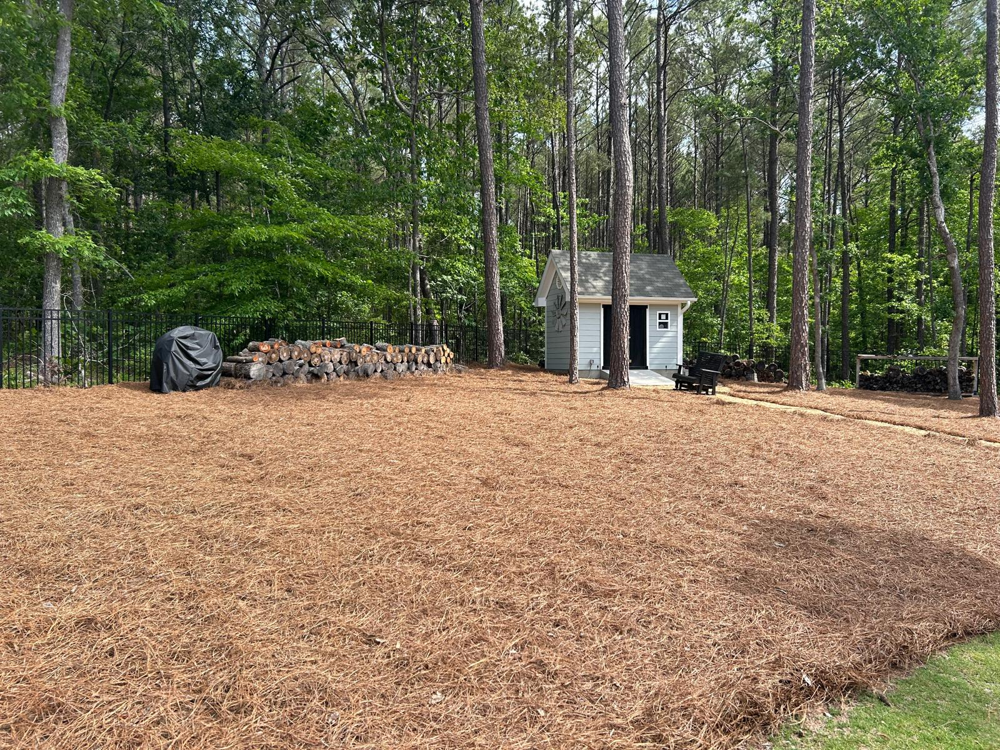
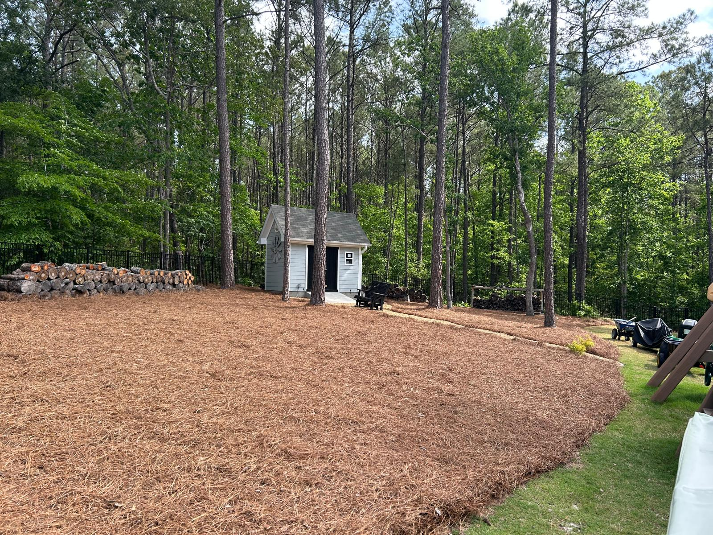
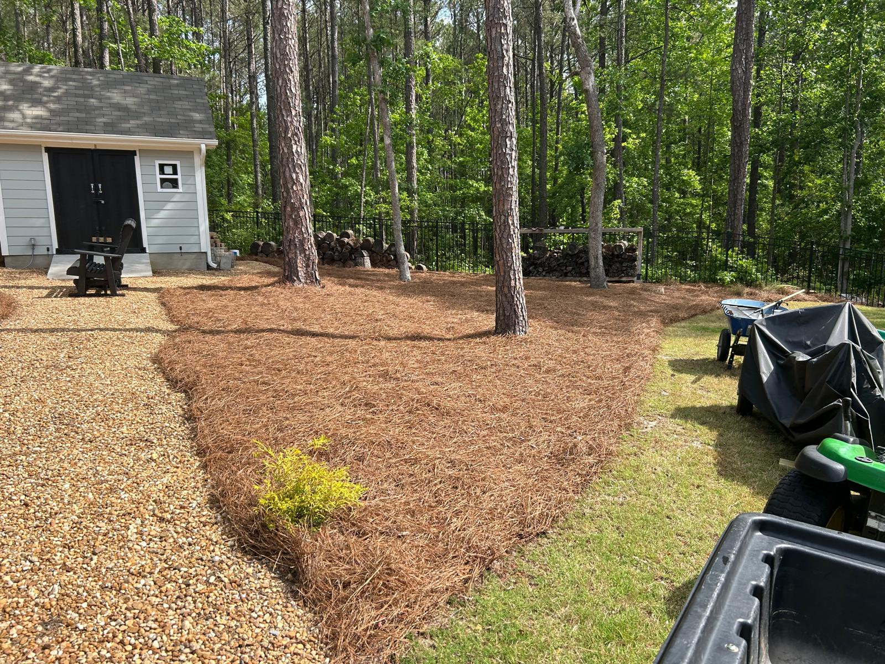
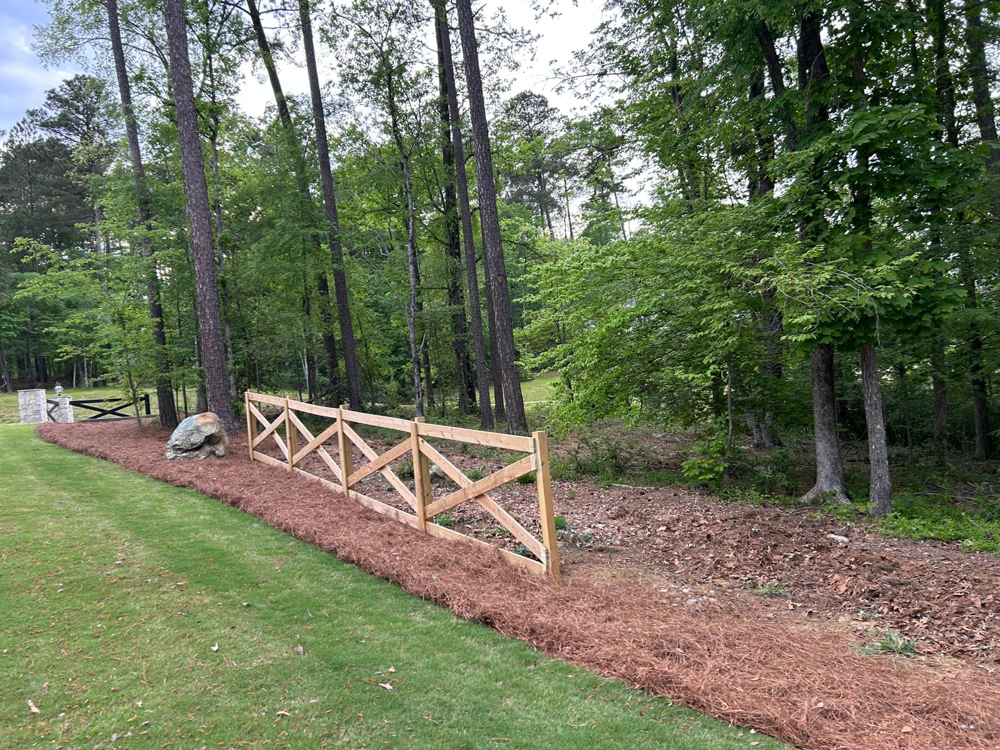
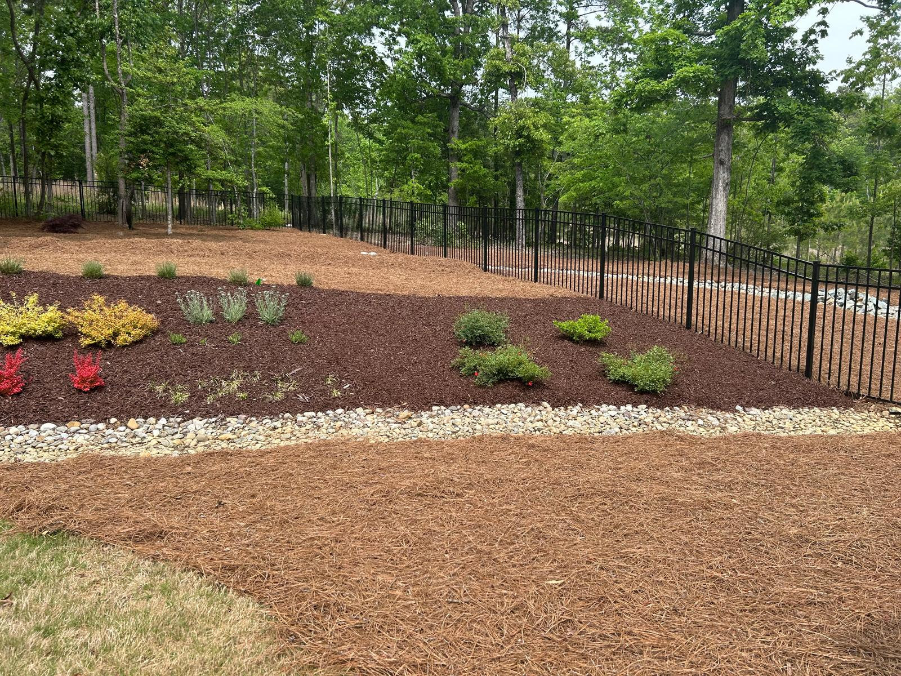
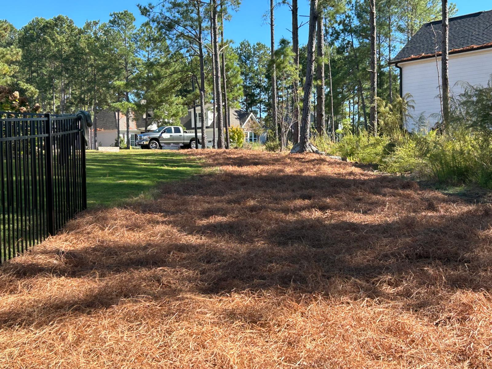
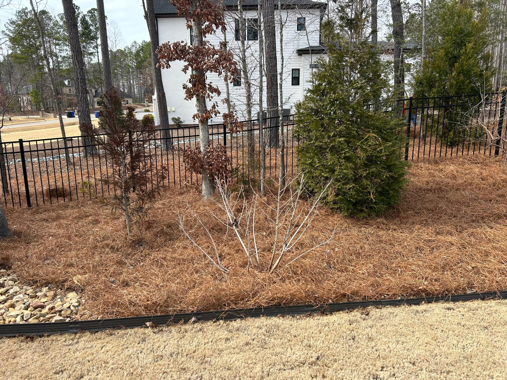
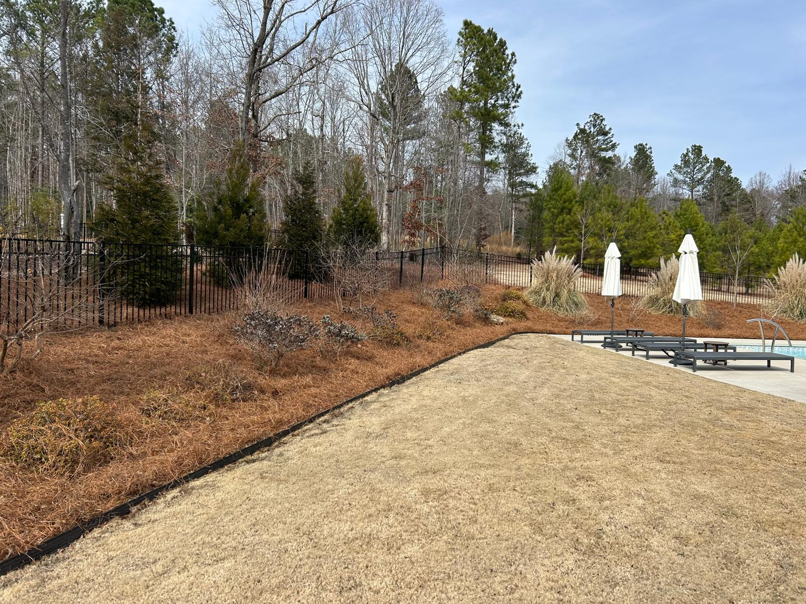

Our Services
Pine Straw Installation
Premium pine straw installation that gives your landscape a clean, natural, and professionally maintained look.
What We Offer
Clean, Natural Coverage That Elevates Your Landscape
Our pine straw installation service is designed to improve the appearance of your property while creating a clean and polished finish around flower beds, trees, and landscaped areas.
Pine straw adds a natural look, helps retain moisture, reduces erosion, and gives your outdoor space a more maintained and professional appearance. Whether you need a fresh install or a seasonal refresh, we deliver reliable work with attention to detail.
Included in this service
- Fresh pine straw installation
- Clean bed coverage and even spreading
- Landscape refresh for a more polished look
- Professional, detail-focused outdoor work
Gallery
Recent Pine Straw Work
Real work, clean finishes, and outdoor spaces professionally cared for.








Need a Quote?
Let’s Talk About Your Property
Call today to get a straightforward quote for pine straw installation and outdoor property care.
Call Now